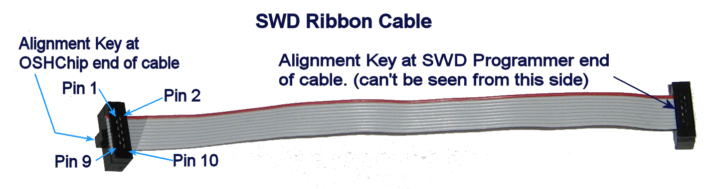
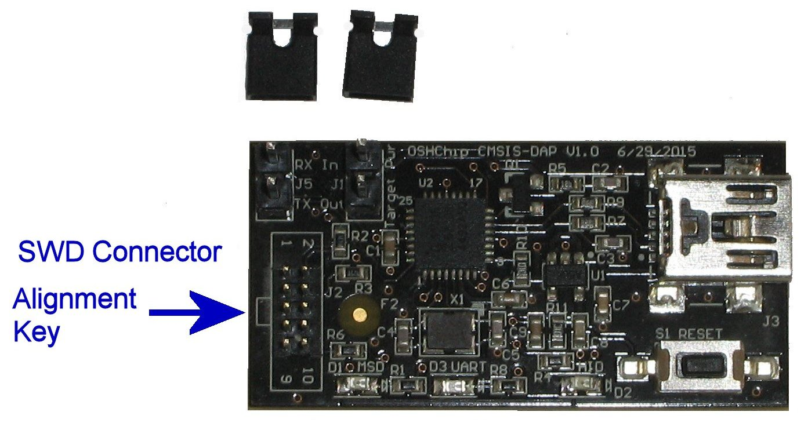
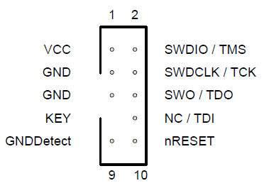
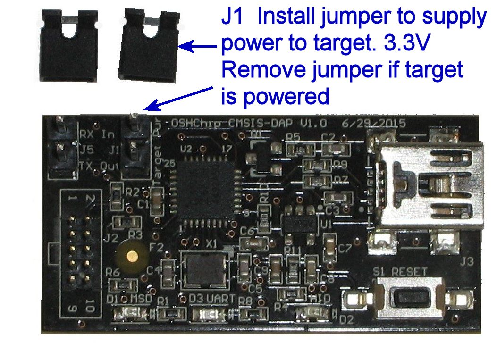
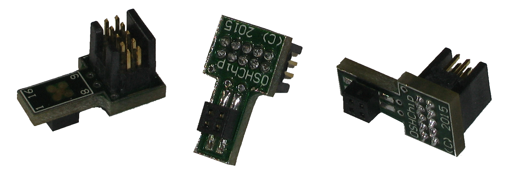
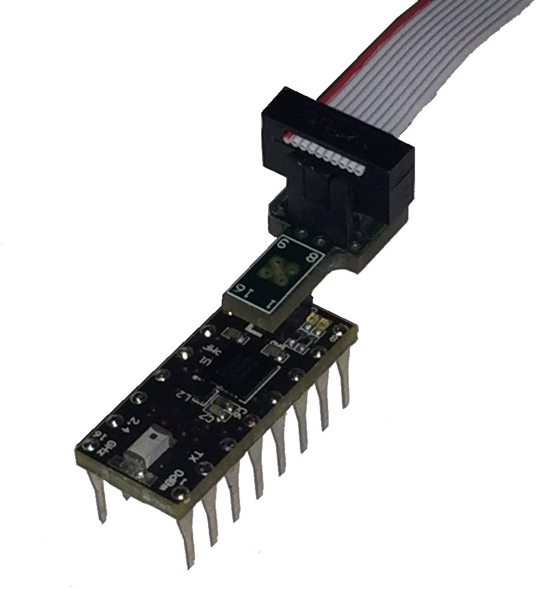
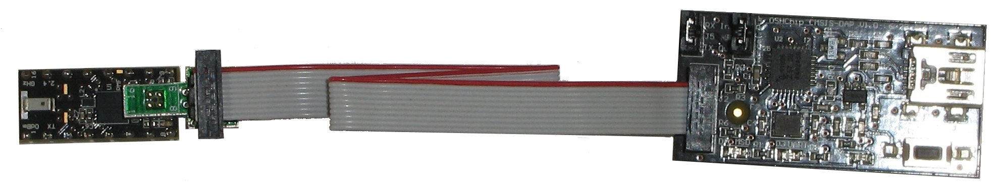
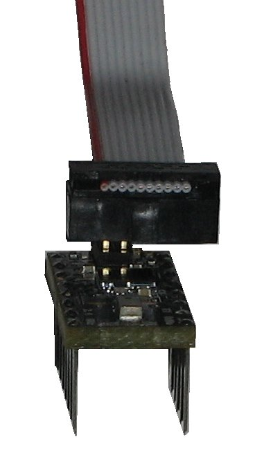

OSHChip Connections
For programming and debugging of OSHChips, a standard SWD cable connects the programmer/debugger to the connector on the top of the OSHChip.
The cable is a 10 wire ribbon cable, with a 0.050” pitch 2 by 5 pin female keyed IDC connector at each end. The cable is typically 4 to 6 inches long and has a red stripe on the wire that carries the signal between pin 1 of each connector.

If you already have an SWD programmer from another vendor, provided you also have a programming cable with the 0.050” pitch 2 by 5 IDC connector on the end, you can get by without the adapter. See below for details.
The alignment key on the programming cable at the programmer end (right end in the picture above) must match the alignment mark on the printed circuit board. See the following picture.

Looking at the connector from above, with the alignment key on the left side, the pins are numbered:
| 1 | 2 |
| 3 | 4 |
| 5 | 6 |
| 7 | 8 |
| 9 | 10 |
The required signals are on pins 1, 2, 3, and 4, which are in a 2 by 2 group at the red stripe end of the connector. This matches the 2 by 2 connector on the top of OSHChip.
ARM documents both old and new programming/debugging connectors in this documnet cortex_debug_connectors.pdf . The OSHChip_CMSIS_DAP V1.0 Programmer/Debugger connector is shown on the top of the second page of that document, with the only signals implemented being pins 1 through 4. Here is the diagram from the ARM document:

Serial Connector J5
See Connecting and using the serial data interface
Programming voltages and Connector J1
OSHChip V1.0 can operate from 1.8 V to 3.6V . Typically 3.3V is used, and 3.3V to 3.6V is a requirement if the on-board LEDs are used.
The OSHChip_CMSIS_DAP V1.0 Programmer/Debugger is powered by the USB cable, and has an internal regulator for 3.3V .
If OSHChip is powered from 2.5V to 3.6V but not 3.3V
- OSHChip can be left connected to the rest of the target system
- J1 must not have the jumper installed, because the target system and the programmer power supplies are at different voltages
- Both programming and debugging can be performed
If OSHChip is powered at 3.3V
- OSHChip can be left connected to the rest of the target system
- J1 may have the jumper installed, but it is not necessary
- Both programming and debugging can be performed
If OSHChip is powered from 1.8V to 2.4V
- OSHChip must be unplugged from the target system before connecting the programming cable for programming
- J1 must have the jumper installed (this powers OSHChip when it is not plugged into the target system)
- Programming can be performed
- Debugging can only be done if the program being debugged can operate without OSHChip being connected to the rest of the target system
- After programming is finished, the programming cable must be disconnected first from OSHChip, and then OSHChip can be plugged back into the target system. Do not plug it back into the target system with the programming cable and programmer still attached

SWD Programmer/Debuggers from other suppliers
Example SWD programmers include:
- OSHChip_CMSIS_DAP V1.0
- Segger J-Link
- Segger J-Link Lite
- Keil ULink
- Nordic Semiconductor nRF51-DK
The following have not been tested, but may work using the Keil IDE
- CooCox CoLinkEx
- PEmicro Multilink
If you do not already have a programmer, when ordering OSHChips you should also order an OSHChip_CMSIS_DAP V1.0 It comes with a programming cable and an adapter that converts from the 2 by 5 pin IDC connector on the end of the cable to a 2 by 2 conector that mates with the connector on the top of OSHChip.

SWD 2x5 to 2x2 Adapter
Programming/Debugging cable orientation
With the adapter

Programming cable, adapter, and OSHChip

OSHChip, Adapter, Cable, and OSHChip_CMSIS_Dap
Without the adapter
OSHChip can be programmed with SWD programmers from other suppliers, listed above. Provided they have a programming cable with the 2 by 5 pin IDC connector on the end, with 0.05” pitch, they can be used to program and debug OSHChip. (the other common ARM debugger cables have a 2 by 10 pin IDC connector on the end, with 0.1” pitch, which cannot be used without a suitable conversion from 0.1” to 0.05” pitch)
To connect the SWD programmer to OSHChip without the adapter, the IDC connector must be carefully positioned so that the 4 pins on the top of OSHChip fit into the 2 by 2 pins at the red stripe end of the connector at the end of the cable. The cable orientation is the same as that used when the adapter is available. When attaching the cable to OSHChip, just be very careful that the 4 pins from OSHChip go into the 4 holes in the connector that are closest to the red stripe on the cable.
See the picture below.

Programming cable and OSHChip